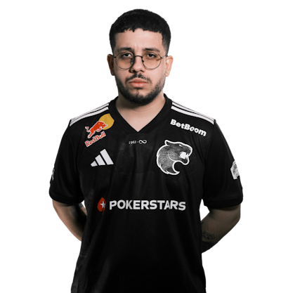
Quem é kscerato?
O Kscerato é um dos 5 players da line de Counter Strike da Fúria. Ele exerce a função de lunker no time da fúria. Ele foi o 18° melhor jogador do mundo em 2020, 15° em 2021, 9° em 2022, 19° em 2023 e 9° em 2025, e possui 1 medalha de Mvp.
Titulos individuais do Kscerato
Clique aqui para ver os títulos individuais do Kscerato
-
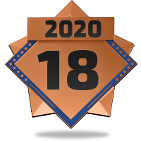
18° melhor jogador de 2020 -
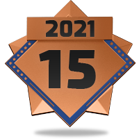
15° melhor jogador de 2021 -
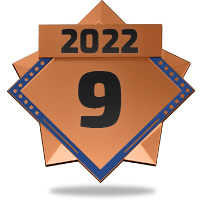
9° melhor jogador de 2022 -
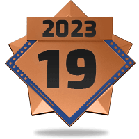
19° melhor jogador de 2023 - 9° melhor jogador de 2025
- Thunderpick World Championship 2025
Titulos coletivos do Kscerato
Clique para ver as os títulos coletivos do Kscerato
-
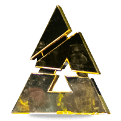
BLAST Rivals 2025 Seanson 2 -
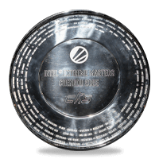
IEM Chengdu 2025 -
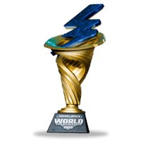
Thunderpick World Championship 2025 -
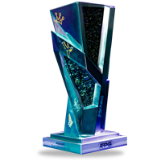
FISSURE Playground 2 -
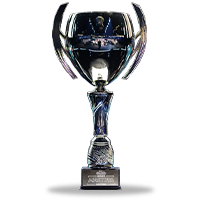
Elisa Masters Espoo 2023 - IEM New York 2020 - North America
-
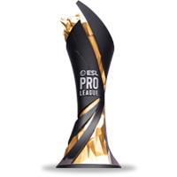
ESL Pro League Season 12 - North America - DreamHack Masters Spring 2020 - North America